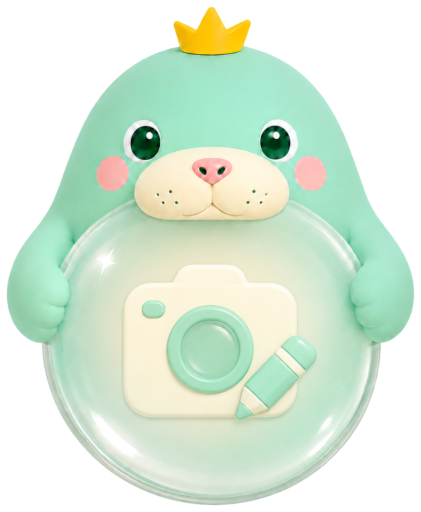

Mike 첨부 "카메라 든 순공이" 이미지를 배경 누끼(투명) 처리 후, 메인 카메라 히어로 카드의 아이콘 자리에 적용한 변형입니다. 카드 배치·카피·버튼은 그대로.

마스코트'" />
모바일 하단 카메라 FAB(56px)에는 미적용 — 작은 원에서 디테일 마스코트가 안 읽혀 단순 아이콘 유지.
적용 결정 시 SOO-128-main 메인 카드에 반영합니다. 디자인: tokens · v2 Teal/Mint · 마스코트 순공이(듀공) 락 준수.